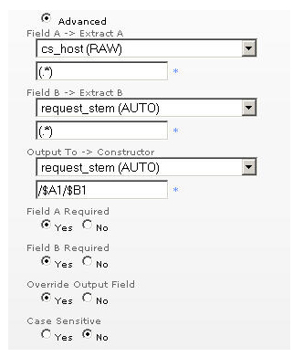

Geavanceerde filters
Inleiding
Met de optie 'Geavanceerd filter' kunt u rapportagevelden maken van een of twee bestaande velden. Reguliere POSIX-expressies en bijbehorende variabelen kunnen worden gebruikt om alle of gedeeltelijke velden vast te leggen en het resultaat in de gewenste volgorde te combineren.
Geavanceerde filters gebruiken

Zoals in de bovenstaande afbeelding wordt weergegeven, bestaat het geavanceerde filter uit twee velden: 'Veld A' en 'Veld B'. Aan de hand van deze velden wordt het uitvoerveld ingevuld. Dit gebeurt als volgt. De expressie 'A extraheren' wordt toegepast op Veld A en de expressie 'B extraheren' wordt toegepast op veld B. In deze expressies kunnen volledige of gedeeltelijke tekstovereenkomsten en jokertekens worden gebruikt. Het volgende overzicht bevat de meestgebruikte jokertekens en hun functies. De expressies komen overeen met reguliere POSIX-expressies.
. elk willekeurig teken * nul of meer van het vorige item + een of meer van het vorige item ? nul of één van het vorige item () inhoud tussen haakjes als item onthouden [] één item in deze lijst - een bereik in een lijst makent | of ^ vanaf het begin van het veld $ tot aan het eind van het veld \ de bovenstaande tekens escapen
Gebruik de haakjes () om bepaalde gedeeltes van de velden vast te leggen. Hiernaar kan worden verwezen in de expressie 'Samenstellen' met de notatie $A1, $A2, $B1 en $B2. De notatie A|B verwijst naar het veld en het nummer verwijst naar de haakjes die het vast te leggen gedeelte van het veld bevatten. In het bovenstaande voorbeeld worden Veld A en Veld B volledig vastgelegd en gecombineerd tot een nieuw veld. Het veld 'Uitvoeren naar' kan een afzonderlijk veld zijn, maar het kan ook Veld A of Veld B zijn.
Besturingselementen
Met het besturingselement 'Uitvoerveld negeren' kunt u aangeven wat er moet gebeuren wanneer het veld 'Uitvoeren naar' al bestaat. Met 'Veld verplicht' kunt u aangeven wat er moet gebeuren als een van de expressies niet overeenkomt.